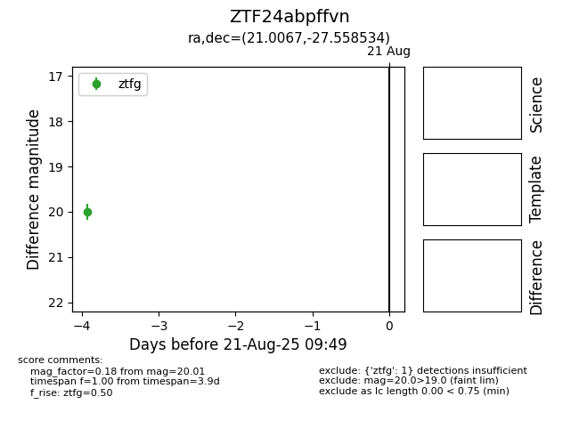

Target ZTF24abpffvn at 2025-08-21 09:49, see:
FINK: fink-portal.org/ZTF24abpffvn
Lasair: lasair-ztf.lsst.ac.uk/objects/ZTF24abpffvn
ALeRCE: alerce.online/object/ZTF24abpffvn
alt names
ZTF24abpffvn (ztf,alerce)
coordinates:
equatorial (ra, dec) = (21.0067,-27.55853)
galactic (l, b) = (218.2024,-82.75159)
photometry
last ztfg=20.01
1 ztfg detections
